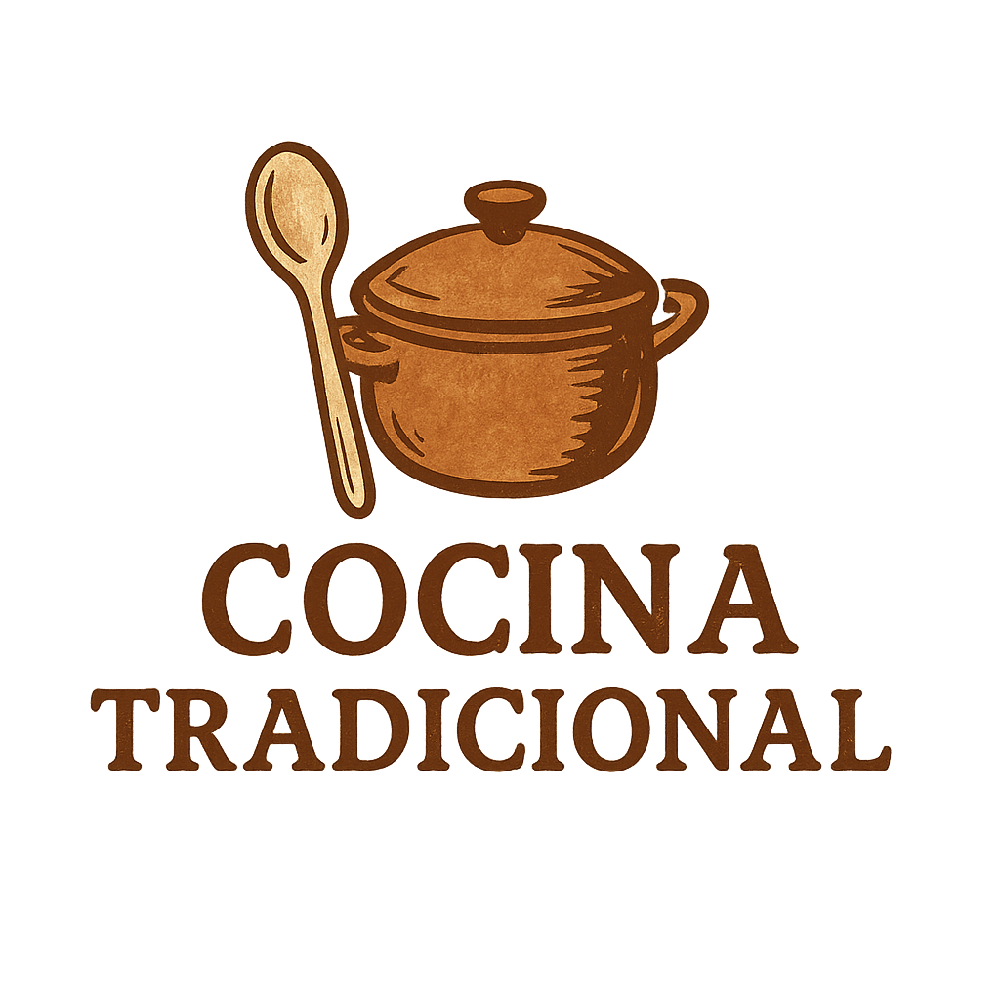

Eventos UOC
Cocina Tradicional
Descubre las recetas de nuestras abuelas, técnicas de toda la vida y productos locales.
27 y 28 de Enero
Barcelona
¿Qué aprenderás?
- Repostería tradicional
- Carnes y guisos de pueblo
- Conservas y técnicas ancestrales
